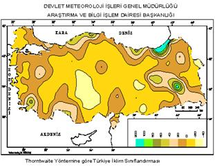

Kastamonu İli'nde iki ayrı iklim tipi görülmektedir İlin kuzeyinde Karadeniz iklimi egemenken, güneyde İç Anadolu ikliminin etkilerine rastlanmaktadır. İlin iklimini biçimlendiren etkenlerin en önemlilerinden biri yeryüzü şekilleridir. Kastamonu İli'nin kuzeyinde kıyıya koşut olarak uzanan Küre Dağları, ilin kıyı kesimleri ile iç kesimler arasında bir engel oluşturmaktadır. Bu nedenle, iç kesimlere doğru Karadeniz ikliminin etkisi giderek azalmakta, yerini İç Anadolu ikliminin sert ve karasal özellikleri almaktadır. Ancak, Küre Dağları'nın güneyinde, yani ilin iç kesimlerinde kalmasına karşın, yükseltisi 1500 m'ye varan plato alanları ve bunların üzerinde yer alan yüksek ve dalgalı alanlar deniz etkilerinden tam anlamıyla uzak değildir. Batıdan gelip Küre Dağları'ndaki geldiklerden içerilere sokulan hava kütleleri, yüksek yerlere fazla yağış bırakabilmektedir. Öte yandan, ilin ikinci yüksek kütlesini oluşturan Ilgaz Dağları'nın da kuzeye bakan yamaçları güneyinden daha nemlidir. Bu nedenle günlük sıcaklık farklarının fazla olduğu dönemlerde, ortaya çıkan basınç farkları yerel rüzgarlara da neden olmaktadır.
Kastamonu'da kış dönemindeki düşük sıcaklıkları, kuzeyden gelen hava akımlarıyla durgun hava kütleleri oluşturmaktadır. Batıdan ve güneyden gelen hava akımlarıyla içinde de düşük sıcaklıklara rastlanmasına karşın, bunlar genellikle daha sıcaktır. Merkez İlçe'de yıllık sıcaklık ortalaması 9,8°C' dir. Bu değer Kastamonu'ya komşu il merkezinden Zonguldak'ta 13,5° C, Çorum'da 10,9° C, Sinop'ta 14° C, Çankırı'da ise 11,5° C'dir. Bu değerler bize Karadeniz ikliminin etkisi altındaki Sinop ve Zonguldak'ın ya da karasal iklim etkisindeki Çankırı ve Çorum'un ortalama sıcaklığının daha fazla olduğunu gösterir. Bunun nedeni morfolojik yapıdır. Zira Kastamonu'da hem karasal, hem de Karadeniz iklimi görülmektedir. Merkez İlçe'de en soğuk geçen aylar ocak ve şubat, en sıcak geçen aylar ise temmuz ve ağustostur.
Kastamonu'da yağışın aylara dağılımı oldukça düzenlidir Kış dönemindeki yağışlar yıllık yağışın % 18'ini, yaz yağışları ise % 27'sini oluşturmaktadır Yağışların büyük bölümü ise bahar aylarında düşmektedir Ocak ayının % 6'lık yağış oranına karşılık, mayıs ayında yıllık yağışın % 18'i düşmektedir Merkez İlçe'nin yıllık yağış ortalaması 449,7 mm'dir Bu değer, kıyı kesiminde İnebolu'da 1052,2 mm, Bozkurt'ta ise 1214,8 mm'ye dek yükselmektedir Kastamonu'ya en az yağış, aralık, ocak ve şubat, en çok yağış ise nisan ve mayıs aylarında düşmektedir. Yılda 19,5 gün kar yağışlı geçen il merkezi.yılda 37.3 gün kar örtüsü altında kalmaktadır.
Ortalama rüzgar hızı 14 m/sn olan ilde, egemen rüzgar, yıl içinde 3524 kez esen güneybatıdır ( lodos ) Bunu, güney - güneybatı ( kıble - lodos ) ve kuzey ( yıldız ) rüzgarları izlemektedir, "de en hızlı rüzgar, saniyede 29.8 m hızla esen güneybatıdır ( lodos ).
Kastamonu İli, bitki örtüsü bakımından oldukça zengin bir alanda yer almaktadır, ilin, Devrekani dolayları orman örtüsünden yoksundur. Ancak, bu kesimlerde de seyrek ağaç, çalı ve orman kalıntılarına rastlanmaktadır. Eğimin daha yumuşak olduğu bu kesimler kestane rengi toprakların yayılım alanıdır. Kıyıdan iç kesimlere gidildikçe yükselti artar, bu kesimde kayın ve köknar ağaçları yaygınlaşır. Podzolik toprakların yayım alanı olan bu bölgede, alt örtü durumundaki eğreltiotu önemli bir yer tutmaktadır. Buradaki kayın,köknar ve çam ormanları, düzgün gelişimli, işletmeye elverişli ve iyi nitelikli ormanlardır. İnebolu ve Cide'nin güneyindeki sırtlarda egemen olan çam, köknar ve kayın türleri arasında yer yer ıhlamur, kestane, karaağaç, gürgen, mersin, kavak, dişbudak ve ahlat türleri de karışmıştır. Sık ormanlık, sırt şeridi ile Azdavay-Devrekânî arasındaki yükseltilerde çam çeşitleri yaygınlaşmaktadır. Çam örtüsü genellikle seyrektir. Kıyı kesimindeki ormanlık alanda, iğne yapraklı ağaç türlerinden kızılçam, sarıçam, karaçam, köknar, porsuk, yapraklı türlerden ise kayın, meşe, dişbudak, akçaağaç, kızılağaç, karaağaç, kestane, ıhlamur, şimşir, yabanıl fındık, kavak, gürgen, çınar gibi ağaçlar vardır. Köknar ve kayın, daha çok dağların kuzeye bakan kesimlerindedir. Ilgaz Dağları ile Devrez Çayı Vadisi arasında Tosya ormanları yer almaktadır. burada da karaçam, sarıçam, meşe ve köknar gibi türlere rastlanmaktadır.